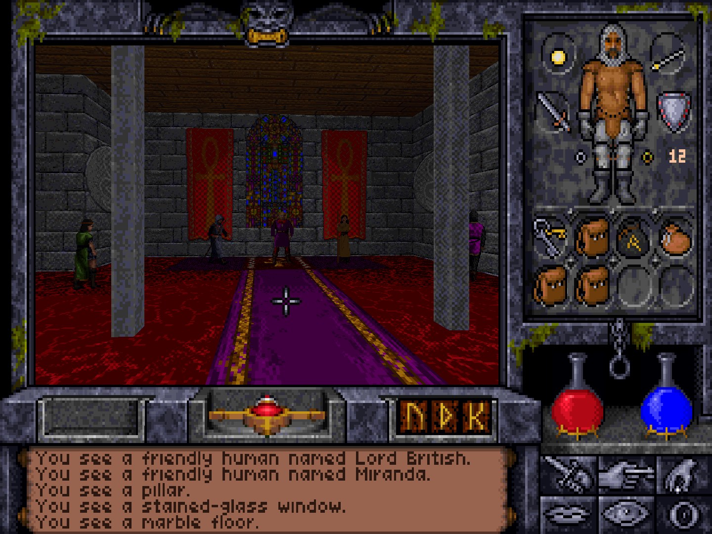
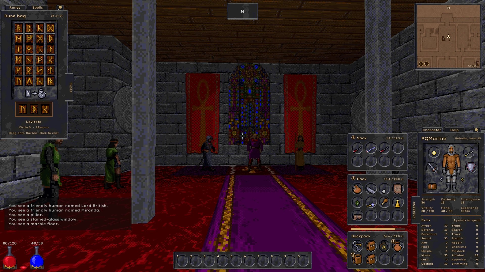

Castle and worlds
Lord British's castle and the worlds reached through the blackrock gem, with their creatures, their schedules and the world's events, their traps and triggers.
Ultima Underworld II · In beta · Windows & Linux
Ultima Underworld II (1993), in the same Underworld Revisited as the first game and read straight from your own copy. Lord British's castle under the blackrock dome, and the worlds beyond it.
Needs Ultima Underworld II from the EA app, GOG.com or Steam, sold on its own. No game data included.
In beta
Every rule of the second game is built, with its music, its sound and its cutscenes. The whole game has been played through against the original, and its classic interface was checked against the original area by area. Save games go both ways between the two.
A beta, because it has been played by few so far. Where it differs from the original, a report helps most; what stays different on purpose is in the list of deviations.
Report a difference


Built against the original
The rules are read from the original's code and checked against the game. What the second game does differently from the first, it does here too.
Lord British's castle and the worlds reached through the blackrock gem, with their creatures, their schedules and the world's events, their traps and triggers.
Running the original conversation bytecode, with all they change in the world, and trading.
The second game's spells and the special weapons, water, lava and ice.
The player's death and the jail, the deaths of the story, and the Pits of Carnage.
The music chosen by the game's own rules, on AdLib, General MIDI, the MT-32 or recordings of your own, and the original's cutscenes.
The second game's own classic screen, inventory, panels, map and options - or the first game's modern interface drawn from its art, with the presets Modern, Classic Modular and Classic Wide and the layout editor. The gamepad works in both.
Palette, Palette colours and Remastered, the Palette effects, xBR and the world at the original's resolution, as in the first game.
Stats with the hidden values and the worn magic, a live map, notes kept with the save, the spells your character knows, and the teachers who train its skills.
The Guardian's speech on level 17 and five other floor triggers that never fire in the original come with "Fix bugs of the original" - on by default, and it can be switched off.
Beyond the dome
Three steps
Get Ultima Underworld II from the EA app, GOG.com or Steam and install it. It is sold on its own.
The same release as for the first game, for Windows (10+, 64-bit) or Linux (x86-64), unpacked into a folder of its own.
Start UR.exe or UR.x86_64. In the main menu, Game in the menu bar lists every installation it found and switches between the two games. Saves go to the installation's UNDEROM2, shared with the original.
Starting it from Steam or GOG Galaxy: see Installing.